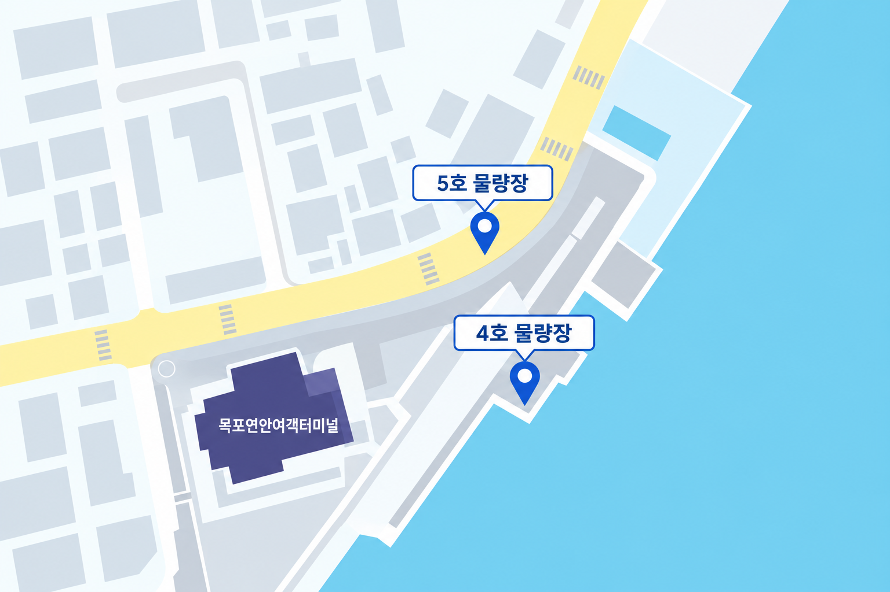
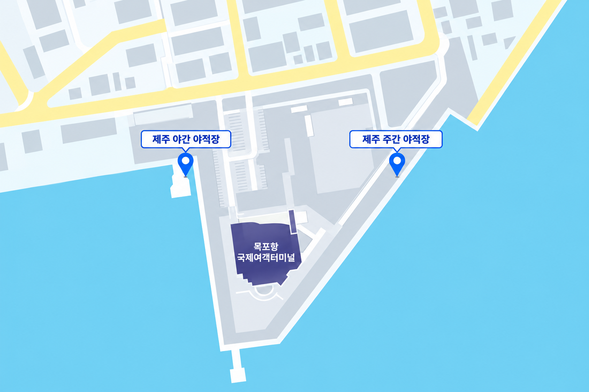

<!doctype html>
<html lang="ko">
<head>
  <meta charset="utf-8">
  <meta name="viewport" content="width=device-width, initial-scale=1">
  <meta name="description" content="차량 선적 전 확인해야 할 준비사항을 안내합니다.">
  <meta property="og:title" content="차량 선적 안내 | 목포항 여객터미널">
  <meta property="og:description" content="차량 선적 전 확인해야 할 준비사항을 안내합니다.">
  <meta property="og:type" content="website">
  <title>차량 선적 안내 | 목포항 여객터미널</title>
  <link rel="icon" href="../../common/images/logo.png" type="image/png">
  <link rel="stylesheet" href="../../common/style.css">
</head>
<body class="portal-page portal-subpage portal-template-page region-template-page region-subpage-page" data-region-page="vehicle-shipping">
  <div id="app"></div>
  <script src="./terminal-data.js"></script>
  <script src="./schedule-data.js"></script>
  <script src="../../common/path-resolver.js"></script>
<script src="../../common/locales/ko.js"></script>
  <script src="../../common/locales/en.js"></script>
  <script src="../../common/i18n.js"></script>
  <script src="../../common/menu-data.js"></script>
  <script>
    window.PORTAL_SUBPAGE_DATA = {
      rootPrefix: '../',
      content: `
<section class="content-block boarding-journey boarding-journey-feature boarding-journey-vehicle" aria-labelledby="vehicle-passenger-process-title">
  <div class="content-heading">
    <h2 id="vehicle-passenger-process-title">차량 승선 절차</h2>
    <p>발권 순서와 차량 선적 방식은 선사·항로별로 다르므로 이용 선사의 안내를 확인해 주세요.</p>
  </div>
  <ol class="boarding-journey-route boarding-journey-route--vehicle" aria-label="차량동반 여객 승선 5단계">
    <li><span>STEP 01</span><div class="boarding-journey-card"><svg class="portal-step-icon vehicle-step-icon" viewBox="0 0 64 64" aria-hidden="true" focusable="false"><path class="vehicle-icon-main" d="M9 18l23-9 23 9v5H9z"/><rect class="vehicle-icon-accent" x="12" y="23" width="40" height="21" rx="2"/><path class="vehicle-icon-paper" d="M18 28h9v9h-9zm19 0h9v9h-9z"/><path class="vehicle-icon-main" d="M13 44h37l4 7H9z"/><path class="vehicle-icon-main" d="M15 40h29l5 7H10z"/><path class="vehicle-icon-paper" d="M20 41h20l2 3H18z"/><circle class="vehicle-icon-main" cx="18" cy="51" r="4"/><circle class="vehicle-icon-main" cx="44" cy="51" r="4"/></svg><h3>터미널 도착</h3><p>터미널 내 하차 구역에서 동승자를 먼저 하차합니다.</p></div></li>
    <li><span>STEP 02</span><div class="boarding-journey-card"><svg class="portal-step-icon vehicle-step-icon" viewBox="0 0 64 64" aria-hidden="true" focusable="false"><rect class="vehicle-icon-accent" x="15" y="12" width="34" height="43" rx="5"/><rect class="vehicle-icon-main" x="20" y="18" width="24" height="32" rx="2"/><rect class="vehicle-icon-accent" x="27" y="9" width="10" height="9" rx="3"/><path class="vehicle-icon-paper" d="M25 26h14v3H25zm0 7h14v3H25zm0 7h10v3H25z"/></svg><h3>차량 접수</h3><p>접수처에서 차량 접수와 서류 확인을 진행합니다.</p></div></li>
    <li><span>STEP 03</span><div class="boarding-journey-card"><svg class="portal-step-icon vehicle-step-icon" viewBox="0 0 64 64" aria-hidden="true" focusable="false"><path class="vehicle-icon-accent" d="M15 35l6-13h22l6 13z"/><path class="vehicle-icon-main" d="M10 34h44v13a4 4 0 0 1-4 4H14a4 4 0 0 1-4-4z"/><path class="vehicle-icon-paper" d="M22 26h20l4 8H18z"/><rect class="vehicle-icon-accent" x="14" y="39" width="8" height="4" rx="2"/><rect class="vehicle-icon-accent" x="42" y="39" width="8" height="4" rx="2"/><circle class="vehicle-icon-main" cx="19" cy="51" r="4"/><circle class="vehicle-icon-main" cx="45" cy="51" r="4"/></svg><h3>차량 선적</h3><p>직원 안내에 따라 차량을 선적합니다.</p></div></li>
    <li><span>STEP 04</span><div class="boarding-journey-card"><svg class="portal-step-icon vehicle-step-icon" viewBox="0 0 64 64" aria-hidden="true" focusable="false"><path class="vehicle-icon-main" d="M10 17h44v11a5 5 0 0 0 0 10v11H10V38a5 5 0 0 0 0-10z"/><path class="vehicle-icon-accent" d="M39 22h2v4h-2zm0 7h2v4h-2zm0 7h2v4h-2zm0 7h2v2h-2z"/><path class="vehicle-icon-paper" d="M17 25h16v3H17zm0 7h16v3H17zm0 7h11v3H17z"/></svg><h3>여객 발권·개찰</h3><p>여객터미널에서 발권 후 개찰을 받습니다.</p></div></li>
    <li><span>STEP 05</span><div class="boarding-journey-card"><svg class="portal-step-icon vehicle-step-icon" viewBox="0 0 64 64" aria-hidden="true" focusable="false"><path class="vehicle-icon-accent" d="M16 32h32v9H16z"/><path class="vehicle-icon-main" d="M21 22h23v11H21z"/><path class="vehicle-icon-main" d="M29 16h8v7h-8z"/><path class="vehicle-icon-paper" d="M25 26h6v4h-6zm10 0h6v4h-6z"/><path class="vehicle-icon-main" d="M7 40h50l-7 13H15z"/><path class="vehicle-icon-accent" d="M8 56c4-3 8-3 12 0s8 3 12 0 8-3 12 0 8 3 12 0v4c-4 3-8 3-12 0s-8-3-12 0-8 3-12 0-8-3-12 0z"/></svg><h3>여객 승선</h3><p>안내에 따라 여객 승선 후 출항을 기다립니다.</p></div></li>
  </ol>
</section>

<section class="content-block" aria-labelledby="vehicle-location-title">
  <div class="content-heading">
    <h2 id="vehicle-location-title">차량 선적 장소</h2>
    <p>이용 터미널을 선택해 차량 선적 장소를 확인해 주세요. 실제 집결 장소는 이용 선사의 안내를 확인해 주세요.</p>
  </div>
  <div class="vehicle-location-browser" data-terminal-floor-browser>
    <div class="tab-list" role="tablist" aria-label="차량 선적 터미널 선택">
      <button class="tab-button" id="vehicle-location-tab-coastal" type="button" role="tab" aria-selected="true" aria-controls="vehicle-location-panel-coastal" tabindex="0" data-floor-tab="coastal">연안터미널</button>
      <button class="tab-button" id="vehicle-location-tab-international" type="button" role="tab" aria-selected="false" aria-controls="vehicle-location-panel-international" tabindex="-1" data-floor-tab="international">국제터미널</button>
    </div>
    <section id="vehicle-location-panel-coastal" role="tabpanel" aria-labelledby="vehicle-location-tab-coastal" data-floor-panel="coastal" tabindex="0">
      <figure class="vehicle-location-map">
        
      </figure>
    </section>
    <section id="vehicle-location-panel-international" role="tabpanel" aria-labelledby="vehicle-location-tab-international" data-floor-panel="international" tabindex="0" hidden>
      <figure class="vehicle-location-map">
        
      </figure>
    </section>
  </div>
</section>

<section class="content-block" aria-labelledby="vehicle-check-title">
  <div class="content-heading">
    <h2 id="vehicle-check-title">차량 선적 시 주의사항</h2>
  </div>
  <aside class="mokpo-timetable-group-note mokpo-timetable-general-notice" role="note" aria-labelledby="vehicle-check-title">
    <ul>
      <li><strong>서류·예약 정보:</strong> 차량등록증과 승선자 전원의 신분증을 준비하고 차종·차량번호를 확인해 주세요.</li>
      <li><strong>차량 조건·접수시간:</strong> 차량 규격·적재물·운임을 확인하고 지정 장소에서 마감 전 접수해 주세요.</li>
      <li><strong>물품·차량 인계:</strong> 귀중품과 선내 물품을 미리 챙기고, 탈착 부품 보관과 차량 이동·고정은 직원 안내를 따라 주세요.</li>
      <li><strong>차량 상태 확인:</strong> 선적 전후 이상은 즉시 신고해 주세요. 선적 위치와 순서는 현장에서 안내합니다.</li>
      <li><strong>운항 변경:</strong> 운항 통제 시 취소·환불·재예약 방법을 선사에 확인해 주세요.</li>
    </ul>
    <strong class="mokpo-timetable-group-note__title vehicle-notice-restricted-title" id="vehicle-notice-restricted-title">차량 선적이 제한될 수 있는 경우</strong>
    <ul aria-labelledby="vehicle-notice-restricted-title">
      <li><strong>전기차 조건:</strong> 충전율·사고 이력 기준은 선사별로 다르며, 미충족 시 선적이 제한될 수 있습니다.</li>
      <li><strong>예약 변경·접수 지연:</strong> 차종이 예약과 다르거나 마감시간을 넘기면 선적이 제한될 수 있습니다.</li>
      <li><strong>특수 차량·제한 물품:</strong> 스파이크 타이어·저상·개조 차량과 외부 부착물·위험물은 선적 가능 여부를 미리 문의해 주세요.</li>
    </ul>
  </aside>
</section>`
    };
  </script>
  <script src="../../common/dom-utils.js"></script>
  <script src="../../common/region-page.js"></script>
  <script src="../../common/layout.js"></script>
</body>
</html>
